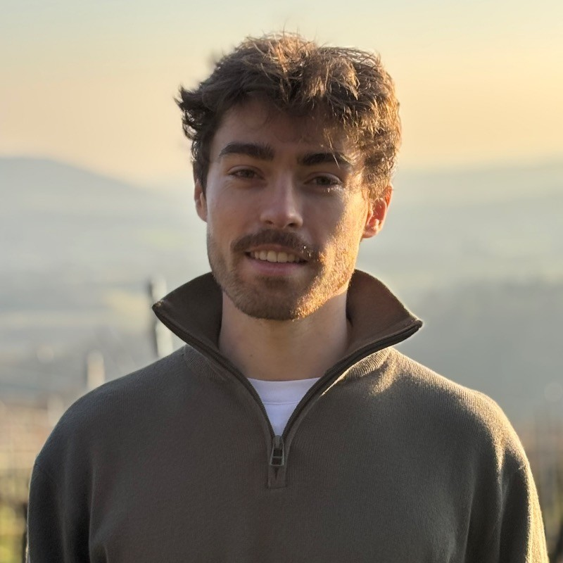

ML Scientist II · Expedia Group
Pricing optimization for hotels and flights, large-scale experimentation, and production ML in Geneva.
ML & software engineer
I am a passionate machine learning and software engineer who enjoys exploring the latest advances in robotics and robot policies in my free time.

Pricing optimization for hotels and flights, large-scale experimentation, and production ML in Geneva.
Independent robot-learning research spanning VLA policies, simulation, custom hardware, deployment, and technical writing.
Applied AI research, Python packages, model-serving APIs, and production infrastructure in Basel.
Forecasting and NLP systems for pricing optimization and financial-risk prediction in Zürich.
Deep-learning research for 3D genome reconstruction, improving prior-work prediction error with transfer learning.
Part-time machine-learning and software-engineering roles in Zürich and Pittsburgh.
An end-to-end robotics project combining language-model planning, enterprise context, robot policies, simulation, and multi-robot execution.
A matched study of ACT and π0.5, simulation, multi-task learning, egocentric human demonstrations, and recovery on a custom low-cost bimanual robot.
A cost-aware experimental design extending RaC — Robot Learning for Long-Horizon Tasks by Scaling Recovery and Correction to compare behavior cloning, simulation, egocentric data, corrections, and recovery-and-correction data.